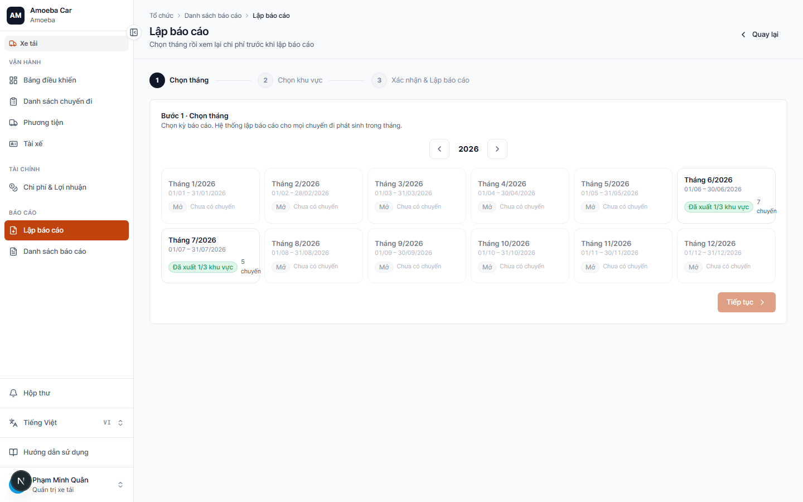
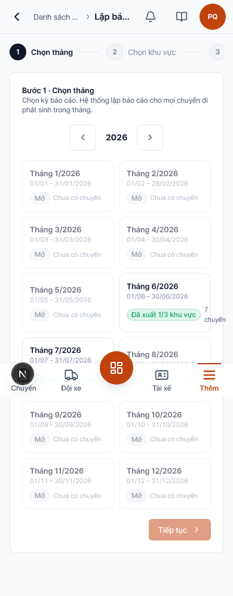
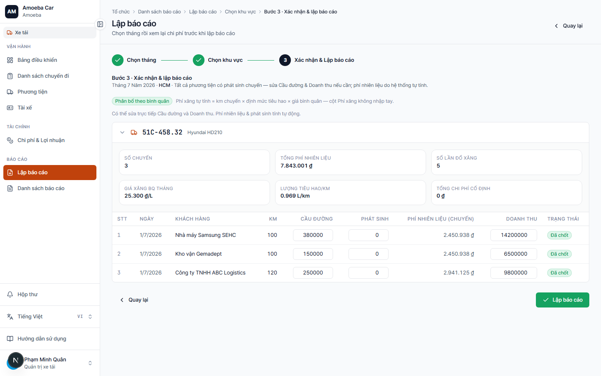
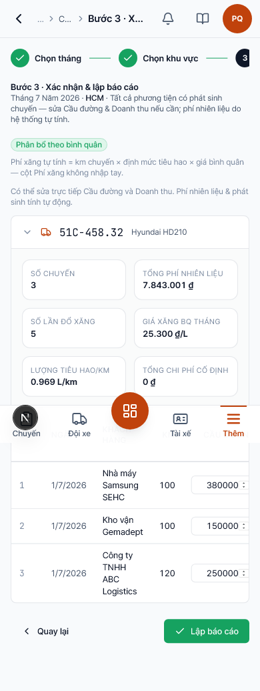

Lập báo cáo
Mở trang trong app /truck/reports/new
- URL
/truck/reports/new- Quy trình
- 3 bước: Chọn tháng → Chọn khu vực → Xác nhận


Các bước sử dụng
- Bước 1 — Chọn tháng: chọn tháng cần lập báo cáo.
- Bước 2 — Chọn khu vực: chọn một khu vực (HCM/Đồng Nai/Baiksan) hoặc toàn khu vực.
- Bước 3 — Xác nhận & Lập báo cáo: xem lại số liệu, kiểm tra huy hiệu phân bổ, rồi bấm tạo.
- Tải file Excel của báo cáo vừa tạo (hoặc từ Danh sách báo cáo).


Bước 3 — phân bổ phí xăng
- Huy hiệu Phân bổ theo bình quân (xanh) = khu vực này đã đủ hoá đơn xăng + km chuyến — cột Phí xăng khoá, tự tính theo định mức.
- Huy hiệu Tạm tính thủ công (vàng) = còn thiếu dữ liệu — cột Phí xăng vẫn sửa tay được; nên bổ sung hoá đơn ở Tổng quan P&L trước khi lập.
- Có chuyến chưa nhập km công tơ → hệ thống cảnh báo; chuyến đó tạm tính phí xăng bằng 0.
- Vẫn sửa được Cầu đường và Doanh thu trực tiếp trên bảng trước khi bấm tạo.
Logic / Quy tắc (chặn lỗi)
- Tháng không có dữ liệu → không cho sang bước 2, báo lỗi ngay tại bước 1.
- Khu vực không có chuyến trong tháng đó → không cho sang bước 3, báo lỗi ngay tại bước 2.
- Lập lại nhiều lần không sao — mỗi lần bấm tạo, hệ thống tính lại từ dữ liệu mới nhất và ghi đè số chính thức; báo cáo cũ vẫn giữ trong Danh sách báo cáo để đối chiếu.
- Báo cáo được đặt tên kèm khu vực và lưu vào Danh sách báo cáo.